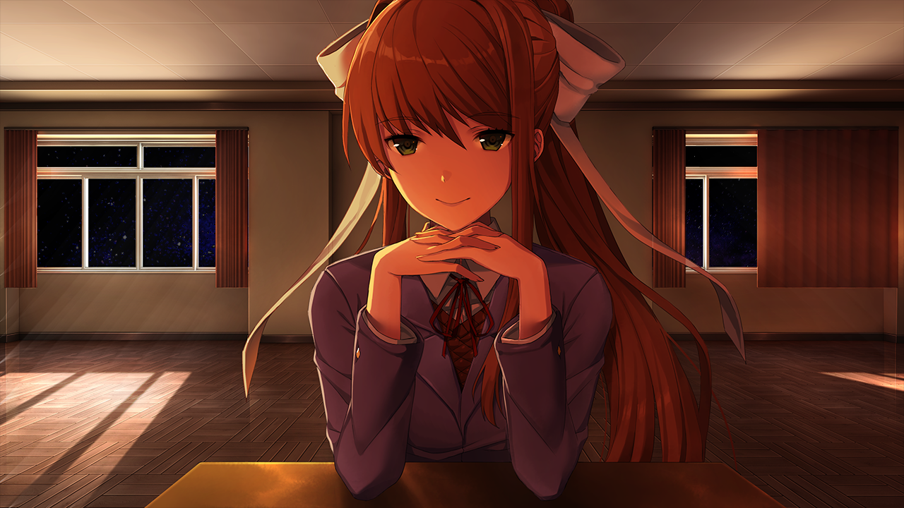

The first act of Doki Doki Literature club begins with Sayori running up to you asking if you would like to walk to school together. She brings you up on your promise that you made previously stating that you would make an attempt to join school clubs. After the school day she comes to you and asks if you would be intested in giving the literature club a try. When you arrive you are greeted by the other girls, Yuri, Monika and Natsuki. They all introduce themselves all and Natsuki passes out cat cupcakes which she made. When the meeting ends Monika suggests that we all write a poem tonight and share them with each other tomorrow morning. When we get home to write out poem we are given different words we can select from each one appealing to a different member of the group with the exception of Monika. The next day we arrive at school and greet the members of the club. The member whom we had chosen the most words for will receive their own cutscene. There is then an argument between Natsuki and Yuri where we must choose a side.After the club is finished we write another poem for a member of the club, this time there is no cutscene with the member who likes our poem the most however we are forced to choose who we will help for the upcoming event for the clubs whereas they will try to gain members. If you choose Yuri you will help decorate and if you choose Natsuki you will help with baking. The game will not let you select Sayori or Monika. On sunday before Natsuki or Yuri vists us we decide to pay Sayori a visit as on friday she seemed to be acting strange on friday. When we arrive at her house she claims that she has depression and that is why she was acting strange which we note is odd as we have never seen any signs of it before. We then return to our house and have Yuri/Natsuki waiting for us. We them spend some time with them and once done go to walk them home. On our way to their house we see Sayori who gives us a hug for checking in on her and lets us know that she is doing alright. The next day when we arrive at the literature club we see that Sayori is not there. After waiting for a little bit we go to her house to check on her and find that she is dead! We are then returned to the main menu with the words end shown on our screen beforehand. The menu looks the same however where Sayori should be there is a glitched version of all the other girls combined and where the Continue button should be there are a bunch of symbols. When we hit that button we start the game however where Sayori should meet us there is the artifacted figure we saw on the menu. We continue the game and when we finish school we see Monika approach us and ask us if we would be interested in checking out the literature club. The game plays similar to before however Sayori is not there and Yuri is the vice president. The second act is pretty similar to the first act however there are several "glitches" we encounter. Eventually Monika deletes all the other characters and brings us into a room whereas she explains what is happening. She is consious and knows that she is in a game. Whomever is the president of the literature club is concious and understands that they are simply a player in a game. She claims that she has fallen in love with the player of the game and goes as far as using the players real name. She says that she will spend the rest of eternaty with you. The only way to finish the game is the go and delete the monika.chr file in the game. Once done the game will restore itself however Monika will not be there. We begin to play the game without Monika Sayori being the president of the literature club. After the first day she stays behind and thanks us for getting rid of Monika then claims that we will be together forever aswell. Then Monika comes back from the dead and proceeds to delete the entire game. This is the primary ending of the game however if you are to go back and restart the game 3 times getting the secret cutscene of every single character Sayori will not want to spend the rest of eternaty with you and instead, compliments you for going back to spend time with everyone and says she will be awaiting for our return. (Below is the picture of Monika after she deletes everyone)
